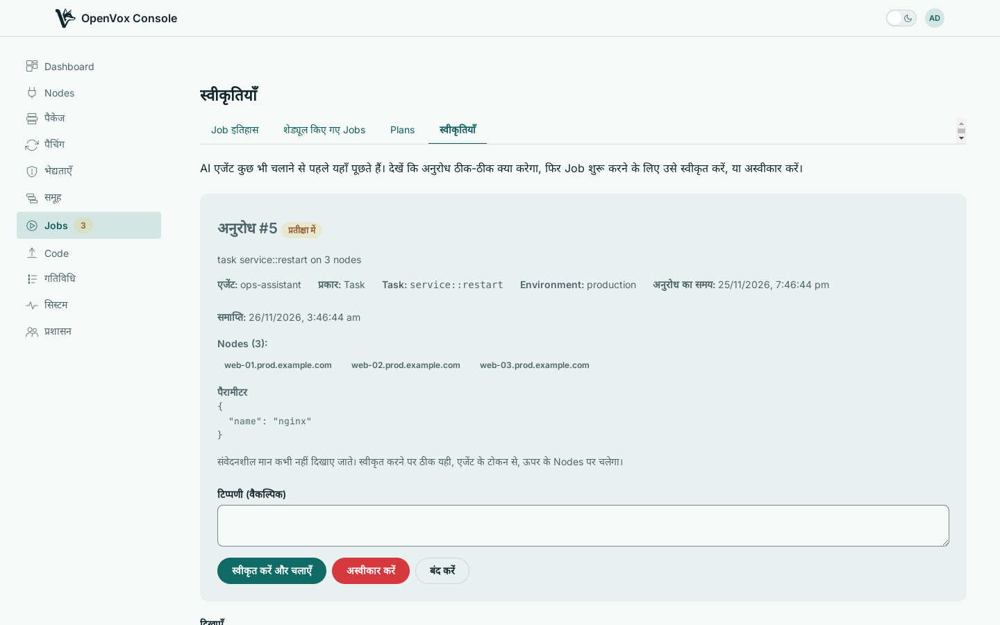
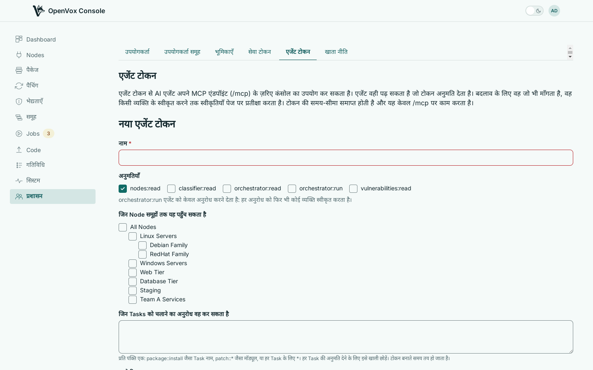

किसी AI एजेंट को MCP पर कंसोल से जोड़िए। यह आपके फ़्लीट को खुलकर पढ़ सकता है। जब भी यह कुछ बदलना चाहता है, यह पूछता है — और जब तक कोई स्वीकृति न दे, कुछ नहीं चलता।
खुलकर पढ़िए, कार्रवाई से पहले पूछिए
एजेंट Nodes, Facts और Reports, Node समूह, आपके कोड में उपलब्ध Tasks और Plans, और Jobs के परिणाम देख सकता है। वह ठीक उतना ही देख सकता है जितना उसका टोकन अनुमति देता है: वे अनुमतियाँ, Node समूह और Tasks जो आपने उसे जारी करते समय चुने।
कोई Task चलाने, Puppet चलाने, कोई Plan चलाने या Nodes पैच करने के लिए एजेंट एक अनुरोध भेजता है। कंसोल उसे ठीक वैसे ही जाँचता है जैसे आपके अनुरोध को जाँचता, उसे संग्रहीत करता है, और एजेंट को बताता है कि वह प्रतीक्षा में है। कुछ भी शुरू नहीं हुआ है।


जो आप स्वीकृत करते हैं, वही चलता है
अनुरोध, agent के पूछने के क्षण पर, Task और उसके पैरामीटर, और वे सटीक Nodes दर्ज करता है जिन पर वह काम करेगा। संवेदनशील मान सील रहते हैं और कभी दिखाए नहीं जाते। स्वीकृति देने वाला व्यक्ति यह सब देखता है, और स्वीकृति ठीक वही शुरू करती है — न कि वह जो agent एक क्षण बाद माँग ले। जिस अनुरोध पर कोई निर्णय नहीं लेता, वह समाप्त हो जाता है।
इससे शुरू होने वाला Job दिखाता है कि उसे किसी AI एजेंट ने माँगा था, किस एजेंट ने, और किसने स्वीकृत किया।


जब तक आप इसे सक्षम न करें, endpoint मौजूद ही नहीं होता, और इसकी अपनी rate limit और आकार सीमाएँ हैं। जो एजेंट MCP नहीं बोलते, वे सामान्य टोकन के साथ कंसोल का प्रलेखित REST API उपयोग कर सकते हैं — स्वीकृति चरण के बिना, इसलिए ऐसे टोकनों को केवल उतना ही दीजिए जितना आप किसी स्क्रिप्ट को देते।
स्वयं कीजिए
किसी AI एजेंट को उसका अपना सीमित टोकन दीजिए, उसे फ़्लीट पढ़ने और बदलाव माँगने दीजिए, और कुछ भी चलने से पहले हर बदलाव को स्वयं स्वीकृत कीजिए।
OpenVox Console कंटेनर इमेजों के रूप में आता है, जो हर push पर amd64 और arm64 के लिए बनती हैं, और एक अकेली बाइनरी के रूप में भी। इंस्टॉल गाइड आपको खाली होस्ट से एक चालू परिनियोजन तक ले जाते हैं - openvoxserver, openvoxdb, Postgres और कंसोल - कंटेनरों से या पैकेजों से।